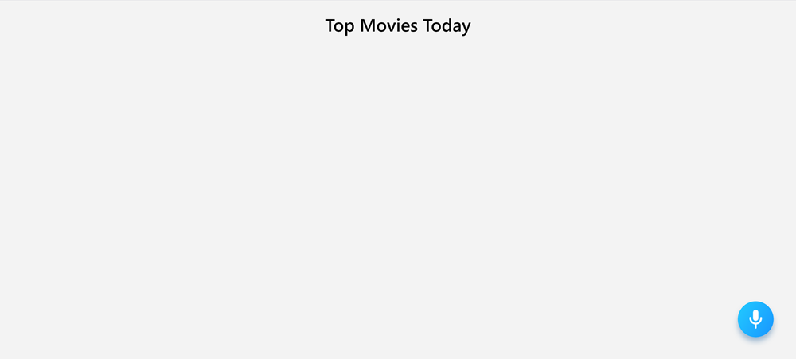
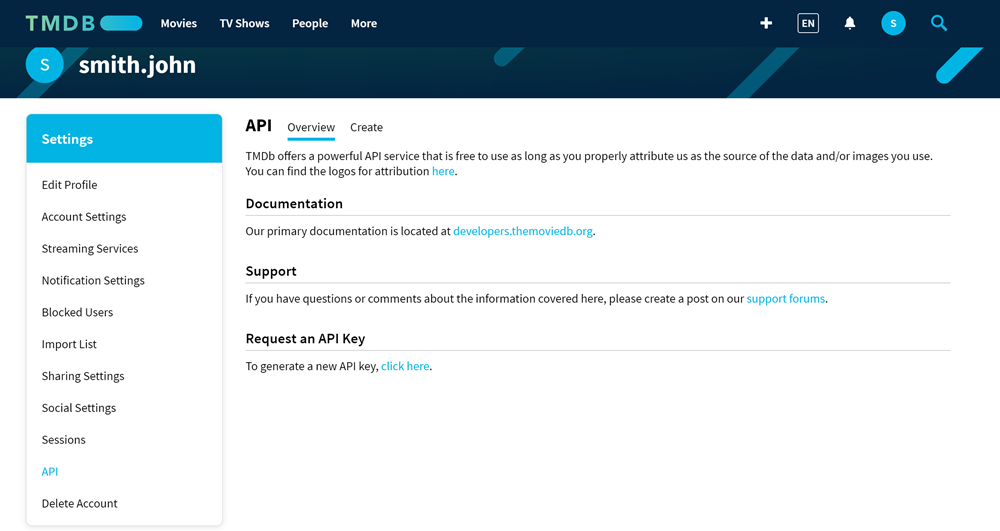
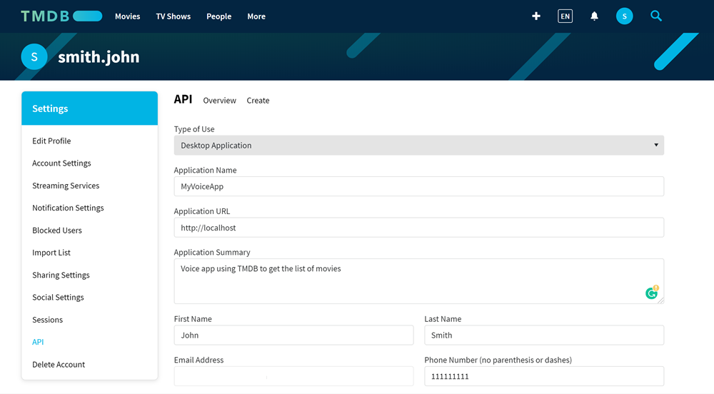
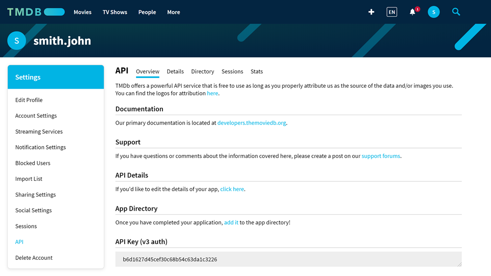

Using dynamic entities in voice commands¶
If you are building a voice assistant for an app whose data changes frequently, you need to make sure your voice commands can be adjusted to the changing data. Imagine an app that gets a list of available items from the database, and the app users should be able to ask about item details. For a fluent dialog with users, it would be great if the voice assistant could react to: Show <item> details even for recently added items, and you do not have to edit the commands in the voice script all the time.
To create such ‘customizable’ voice commands in Alan, you can use dynamic entities. Voice commands with dynamic entities are adjusted to the data passed to them, which makes the voice assistant very adaptable.
In this tutorial, we will create a voice assistant for a webpage that gets a list of popular movies from The Movie Database (TMDB). The list depends on the current movie ratings and can be updated every day, and even every hour. The app users will be able to learn what movies are top rated today and, once Alan names the movies, ask for an overview of a specific movie in the list.
What you will learn¶
How to use dynamic entities in the voice script
How to create voice commands that adjust to obtained data
How to get information about popular movies with voice
What you will need¶
To go through this tutorial, make sure the following prerequisites are met:
You have signed up to Alan Studio.
You have created a project in Alan Studio.
Step 1: Create a webpage¶
First, let’s create a webpage and embed the Alan button to it:
In Alan Studio, open your project.
At the top of the code editor, click Integrations.
In the Embed Code Example section, click Copy All. Save the copied code as an HTML page.
We will display the retrieved list of movies in the webpage when the user gives a voice command. To the
<body>tag of our page, add a container for the movies list:<body> <h1>Top Movies Today</h1> <div id="movies"> </div> ... </body>
And add some styles:
body { background-color: #f3f3f3; } h1 { text-align: center; font-family: Segoe UI Semibold; } #movies { display: flex; flex-direction: row; flex-wrap: wrap; justify-content: center; } #movies > div { font-size: 20px; font-family: Segoe UI Semibold; padding: 15px; padding-left: 180px; border-radius: 5px; background-repeat: no-repeat; background-size: 50px; background-color: white; margin: 10px; width: 25%; }
Open the created webpage and make sure you see the heading and the Alan button in the bottom right corner.
Step 2: Get an API key for TMDB¶
To get the list of popular movies, we will use the TMDB service. Let’s create an account and get the API key for it.
Go to the TMDB signup page.
Specify your data and click Sign Up.
In your mailbox, find an email from TMDB and activate your account. Then log in to TMDB.
In the API > Request an API key section, click the link to generate a new API key.
Proceed with the API key generation: select to create a Developer account, agree with the terms of use and provide your personal data.
Once ready, in the API Key (v3 auth) field, you will see the key. Copy it and save for later.

Step 3: Add the onCreateProject callback¶
Now, let’s open the Alan Studio project and start building our voice script. At this step, we will add some code to make an API call to the TMDB service and retrieve the list of movies.
We will use the onCreateProject callback to initialize data when the project model is created.
In the script editor, add the following code:
const APIKEY = "b6d1627d45cef30c68b54c63da1c3226"; const TMDB = "https://api.themoviedb.org/3/discover/movie"; onCreateProject(() => { const request_url = `${TMDB}?api_key=${APIKEY}&language=en-US&sort_by=popularity.desc&page=1`; api.axios.get(request_url) .then((response) => { let data = response.data; console.log(data); }) .catch((error) => { console.log(error); }); });
In the
APIKEYvariable, provide your API key.Save the code.
Here, we are making an API call to the TMDB service to retrieve the list of movies in English sorted by popularity. The resulting JSON object is logged to the Alan Studio console. For each movie, the following data is retrieved:
{
"page": 1,
"total_results": 10000,
"total_pages": 500,
"results": [{
"popularity": 269.671,
"vote_count": 523,
"video": false,
"poster_path": "\/bOKjzWDxiDkgEQznhzP4kdeAHNI.jpg",
"id": 605116,
"adult": false,
"backdrop_path": "\/qVygtf2vU15L2yKS4Ke44U4oMdD.jpg",
"original_language": "en",
"original_title": "Project Power",
"genre_ids": [28, 80, 878],
"title": "Project Power",
"vote_average": 6.8,
"overview": "An ex-soldier, a teen and a cop collide in New Orleans as they hunt for the source behind a dangerous new pill that grants users temporary superpowers.",
"release_date": "2020-08-14"
},
...
}]
}
In our tutorial, we will address the following keys:
id: movie IDbackdrop_path: movie background imagetitle: movie titleoverview: movie description
You can check it: at the bottom of Alan Studio, expand the logs section and hover over the line with the logged JSON object.
Step 4: Get movie titles and IDs¶
We want Alan to name movies and also let our users ask about specific movies. We need to retrieve the titles of movies from the JSON object together with their IDs. We will use these IDs later to search for movie overviews in JSON.
At the top of the script, add two auxiliary objects for getting the movie data:
videoListandsavedMovies.const APIKEY = "b6d1627d45cef30c68b54c63da1c3226"; const TMDB = "https://api.themoviedb.org/3/discover/movie"; // Add objects let videoList = []; let savedMovies = [];
Update the
onCreateProjectcallback code to the following:onCreateProject(() => { const request_url = `${TMDB}?api_key=${APIKEY}&language=en-US&sort_by=popularity.desc&page=1`; api.axios.get(request_url) .then((response) => { let data = response.data; console.log(data); // Push video titles and IDs to videoList data.results.forEach(element => { videoList.push(element.title.replace(/[^a-zA-Z ]/g, "") + '~' + element.id); }); // Join the videoList values project.videos = videoList.join('|'); savedMovies = data; }) .catch((error) => { console.log(error); }); });
Here, the following is done:
For each element in the movies list, we are retrieving the title and ID and forming a string like this:
Project Power~605116. Additionally, since the movie title may contain special characters, we are removing them from the title string. The result is pushed tovideoList.We are joining the obtained data to receive a string like this:
Project Power~605116|Tesla~517412|.... The result is saved toproject.videos. This way, we get a string of movie titles associated with their IDs, or labels.We are saving the JSON object with movie data to
savedMovies.
Step 5: Play the list of movies¶
Let’s create commands to play the movie titles to the user. In the code editor, add the following:
intent(`What are the (top|best|most popular) movies (now|today|)?`, p => {
p.play(`Top 5 movies today are:`);
for (let i = 0; i < 5; i++) {
let item = savedMovies.results[i].title;
p.play(`${item}`);
}
p.play(`Do you want to hear more?`);
});
intent(`(Yes|Of course|Sure|Go on) (please|)`, p => {
p.play(`Here are some other movies trending today:`);
for (let i = 5; i < savedMovies.results.length; i++) {
let item = savedMovies.results[i].title;
p.play(`${item}`);
}
});
The list of movies may be long, and we do not want the user to get bored. For this reason, we are adding two commands. The first one plays the first 5 movie titles. If the user wants to hear more, he or she can agree to Alan’s offer to name the rest of movies in the list.
You can test it: in the webpage, click the Alan button and say: What are the most popular movies today?. Alan will list 5 movies and
ask if you want to proceed. Say: Yes please to listen to the whole list.
Step 6: Play the movie overview¶
Now, let’s create one more command to play details of a movie available in the list. In the code editor, add the following:
intent(`Tell me about $(MOVIE p:videos)`, p => {
p.play(`Here is something about ${p.MOVIE.value}:`)
let result = savedMovies.results.find(el => el.id === parseInt(p.MOVIE.label, 10));
p.play(`${result.overview}`);
});
This is where dynamic entities are used:
In the intent, we have:
$(MOVIE p:videos). This way, we are addressingproject.videos, which contains the list of movies just as if it were a user-defined slot. When the user asks for details of any movie added toproject.videos, Alan now plays:Here is something about <movieTitle>.Then, we are using
p.MOVIE.labelto get the ID associated with this movie and search oursavedMoviesobject for the movie overview. The overview is played back to the user.
As you can see, with dynamic entities, we do not have to create commands for every specific movie. We have created just one command that can play information about any movie passed to it.
You can test it: in the webpage, click the Alan button and say: What are the most popular movies today?, and then: Tell me about Project Power (or any other movie title you hear). Alan will tell you about the movie you select.
Step 7: Display movies in the webpage¶
Let’s add some visual support to our webpage so that movies are displayed as Alan names them.
In Alan Studio, update the voice commands to the following:
intent(`What are the (top|best|most popular) movies (now|today|)?`, p => { p.play(`Top 5 movies today are:`); for (let i = 0; i < 5; i++) { let item = savedMovies.results[i].title; // Send a command to display the movie title in the app p.play({ command: "showMovie", title: savedMovies.results[i].title, image: savedMovies.results[i].backdrop_path }) p.play(`${item}`); } p.play(`Do you want to hear more?`); }); intent(`(Yes|Of course|Sure|Go on) (please|)`, p => { p.play(`Here are some other movies trending today:`); for (let i = 5; i < savedMovies.results.length; i++) { let item = savedMovies.results[i].title; // Send a command to display the movie title in the app p.play({ command: "showMovie", title: savedMovies.results[i].title, image: savedMovies.results[i].backdrop_path }) p.play(`${item}`); } });
Now, when the user asks about popular movies, Alan sends the
showMoviecommand to the app. In the command, we are passing the following data: movie title and a path to the movie background image.In the webpage, update the
onCommandblock to the following:
Now, when the app receives the showMovie command, it adds a block with the movie title and image to the webpage.
You can test it: in the webpage, click the Alan button and say: What are the most popular movies today? Alan will tell about the top
movies, displaying their titles as it goes through the list.
Step 8. Update the movies list¶
The power of dynamic entities is that when the app data changes, you do not need to make any tweaks in the voice script or your app. To see how it works, let’s emulate data update.
In the onCreateProject callback, change the last digit in the URL by which we send an API call to 2. This way, we are retrieving the second page of results from the TMDB service.
Save the changes and try interacting with Alan in the webpage as before. The list will change, but you will still be able to listen to valid movie overviews in this updated list.